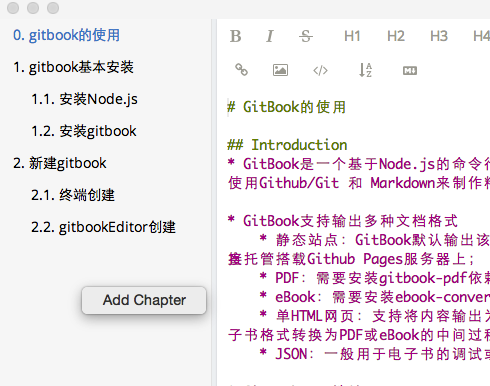

使用gitbookEditor创建
(不推荐)
gitbookEditor的安装
下载地址：https://github.com/GitbookIO/editor/releases
gitbookEditor使用

使用gitbookEditor的利弊:
- 优点
- 方便快捷
- 不需要手动创建SUMMARY.md和README.md文件
- 不需要手动创建章节文件夹(chapter)和章节片段文件(section)
- 一切都只需在gitbook中操作即可
- 可以在右边及时预览Markdown语法编写的效果
- 缺点
- 预览Markdown非常消耗性能，容易出现不确定的错误（尤其机器较卡的情况下）
只能识别目录中的英文
- 当已有一个名为"gitbook基本安装"的章节时，为自动创建名为"gitbook"的文件夹
- 若是再创建一个名为"新建gitbook"的章节时，就会产生冲突，导致"gitbook基本安装"章节的内容丢失